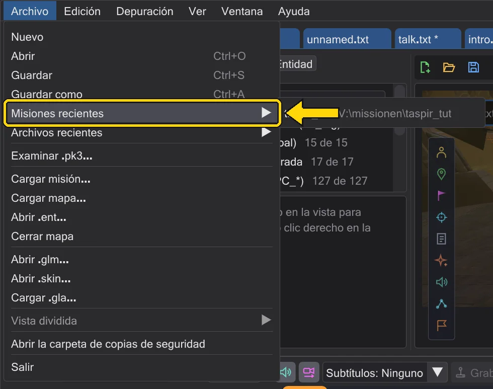
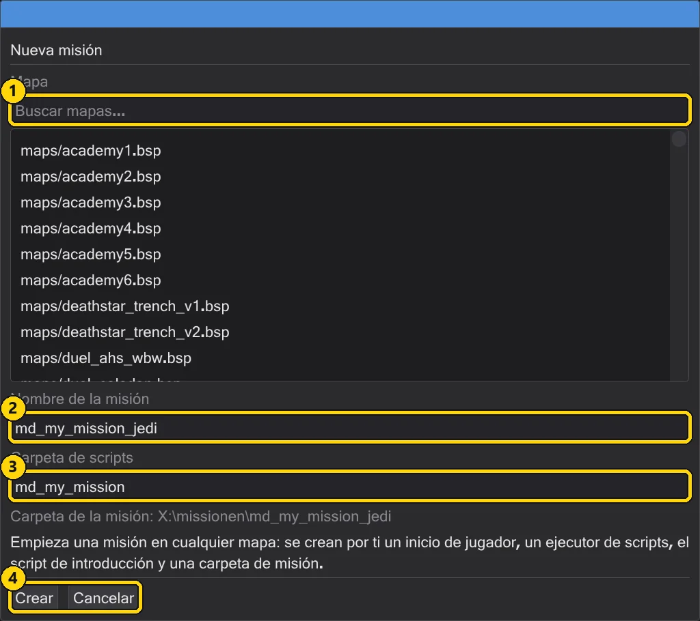
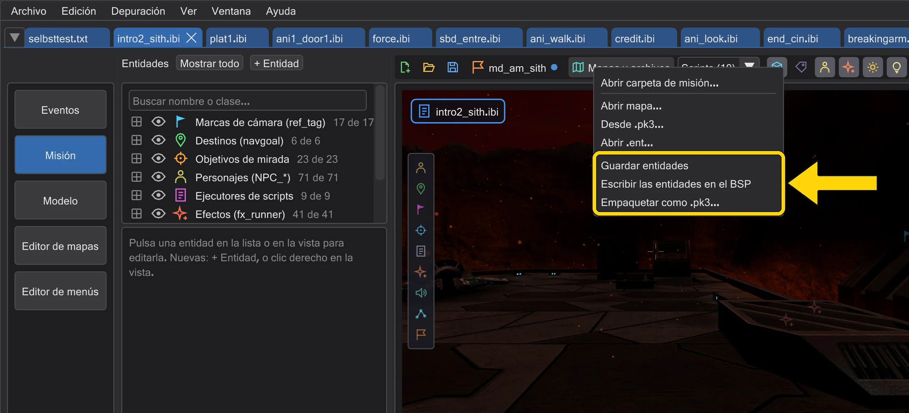
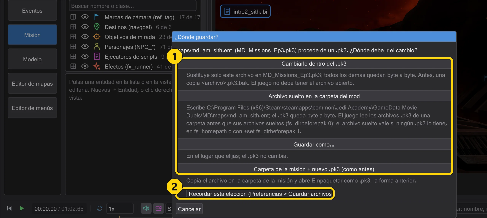
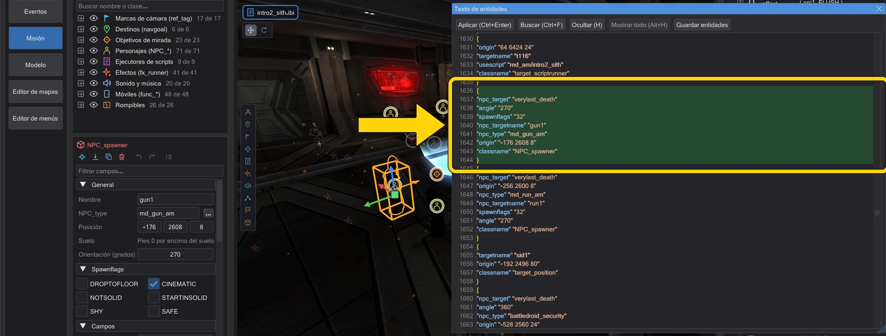
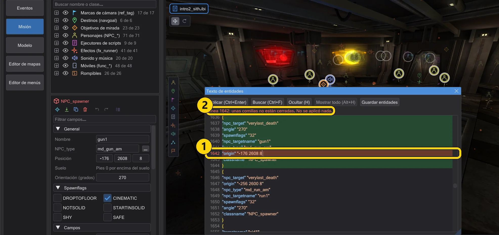
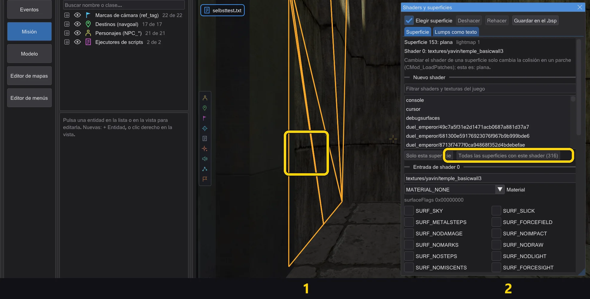
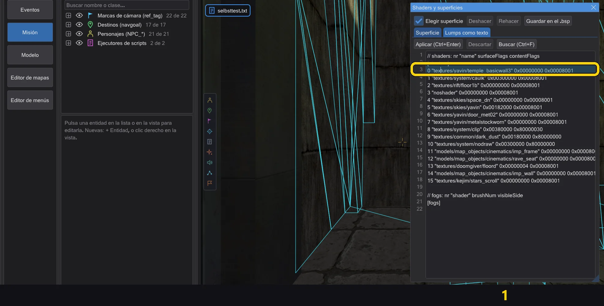

Misiones
Una misión es un mapa con sus entidades y todos sus scripts. Abre una entera, crea la tuya y empaquétala en un .pk3 que carga el juego.
Abrir una misión#
Cargar misión (menú Archivo o la barra del mapa) elige un .pk3 y lista todas las misiones de ese juego: los mapas que tienen scripts, de cada archivo de las carpetas del juego, exactamente como los encuentra el juego (para un nombre cuenta el archivo que gana). No importa qué archivo del juego elijas: assets1.pk3 del Jedi Academy normal lista t1_sour, kor1, yavin1 … igual que assets0.pk3. Las misiones del archivo elegido están arriba; las demás siguen una vez leídas (los mapas se leen en segundo plano; la línea encima de la lista muestra cuánto falta). El campo de filtro reduce la lista por nombre. Elige una y todo queda preparado: el mapa, su .ent con las figuras de la misión, y cada script de la misión en su propia pestaña. Todas las pestañas comparten el mapa y la cámara.

Las pestañas se abren en el orden en que el juego inicia los scripts. Para ello, JK Studio reproduce el mapa desde el momento en que se carga, como el motor: los scripts de aparición de las entidades, el script de aparición de worldspawn, trigger_always, los NPC spawners sin targetname, los destinos del inicio del jugador cuando el jugador entra en el juego, y todo lo que se sigue de ellos mediante run, use, relés, contadores, spawners y kill con un script de muerte. La pestaña del primer script queda delante. Los scripts que solo dispara el jugador (un trigger en el que entra, un combate) van al final, en el orden de las entidades.
Qué carpetas del juego valen lo decide el archivo: si su carpeta es una de tus carpetas del juego (Edición → Carpetas del juego), se usan esas. Si pertenece a otra instalación (su base, o una carpeta de mod junto a un base), JK Studio usa las carpetas de esa instalación solo para esta sesión, en el orden del motor (base y luego el mod), y no mezcla tus carpetas configuradas. Un .pk3 en cualquier otra carpeta se añade detrás de tus carpetas del juego, también solo para esta sesión. No se guarda nada: la ventana de carpetas del juego muestra las carpetas de la sesión con un botón para volver a las tuyas (Usar las carpetas del juego configuradas). Cada pestaña de misión conserva las carpetas de su juego: con una misión de Jedi Outcast en una pestaña y una de Jedi Academy en otra, cambiar de pestaña cambia con ellas las carpetas del juego y las reglas.
Misiones recientes#
Archivo → Misiones recientes y la página de inicio listan las misiones que abriste por última vez, desde un archivo o desde una carpeta de misión. Un clic vuelve a abrir el proyecto entero: mapa, entidades y todos los scripts. Una entrada cuyo archivo ya no existe se quita de la lista.

Una misión nueva#
Nueva misión empieza una misión en cualquier mapa. Elige el mapa, dale un nombre a la misión (letras, cifras y _; el juego la carga como maps/<nombre>.bsp, o sea devmap <nombre>) y una carpeta de scripts. JK Studio crea un inicio de jugador, un ejecutor de scripts, el script de introducción y una carpeta de misión en Documentos\behaved\missions. La introducción se ejecuta cuando aparece el jugador.

Una misión que nunca se empaquetó vive en su carpeta; Abrir carpeta de misión la continúa tras reiniciar.
Guardar los archivos donde se abrieron#
Cada archivo abierto recuerda de dónde viene: un archivo suelto en el disco, o un .pk3 y la entrada dentro de él. Un .bsp, .ent o script suelto se guarda en su ruta sin preguntar: sin copia en Documentos, sin .pk3 nuevo.
- Guardar (Ctrl+S) guarda el script de la pestaña, cada pestaña por separado.
- Guardar entidades escribe las entidades como
.entdonde se abrió; si no, junto al.bsp. El juego prefiere un.entjunto al mapa a las entidades dentro del.bsp. - Escribir las entidades en el BSP escribe las entidades en el propio
.bsp: byte a byte lo que produce-onlyentsdel editor de mapas; geometría, lightmaps y rejilla de luz quedan intactos. Antes de sobrescribir, el archivo anterior queda como<mapa>.bsp.bak. - Guardar misión guarda cada archivo de la misión en su sitio. Empaquetar como .pk3 (menú Mapas y archivos) empaqueta la misión en un
.pk3solo cuando lo quieres.

Desde un .pk3. Un archivo que vino de un .pk3 pregunta adónde debe ir el cambio. Marca Recordar esta elección (Preferencias > Guardar archivos) para conservar la elección; Preferencias → Guardar archivos la cambia después.

.pk3 (aquí las entidades de md_am_sith).| N.º | Nombre | Qué hace |
|---|---|---|
| 1 | Cambiarlo dentro del .pk3 | Sustituye solo esta entrada; todas las demás se copian byte a byte, sin volver a comprimir. Copia <archivo>.pk3.bak. Si el juego tiene el archivo abierto, un mensaje lo dice y no cambia nada. |
| 2 | Archivo suelto en la carpeta del mod | Escribe el archivo en maps/ o scripts/ de la carpeta del mod; el .pk3 queda byte a byte. |
| 3 | Guardar como | El lugar que elijas. |
| 4 | Carpeta de la misión + nuevo .pk3 (como antes) | La forma anterior: copiar en la carpeta de la misión y luego empaquetar un .pk3 nuevo. |
.pk3 de una carpeta antes que sus archivos sueltos (fs_dirbeforepak 0). Un archivo suelto en la misma carpeta del mod solo vale si ningún .pk3 lo contiene, si está en fs_homepath o con +set fs_dirbeforepak 1. Cada guardado pasa por un archivo temporal junto al destino y solo se renombra cuando todo está escrito: si algo falla, el archivo anterior no cambia y no aparece el mensaje de guardado.Preferencias → Guardar archivos: la forma para archivos de un .pk3, Flujo anterior con carpeta de misión (copias en la carpeta de la misión y un .pk3 nuevo, como antes) y Los scripts nuevos reciben la plantilla de BehavEd (desactivado: un script nuevo empieza vacío).
Editar las entidades como texto#
Ventana → Texto de entidades muestra toda la lista de entidades como texto en formato .ent, con números de línea y colores para claves y valores. Un clic en un bloque selecciona la entidad en la vista 3D; si eliges una entidad en 3D, el texto salta a su bloque y lo resalta de { a }.

{ a } (md_am_sith).- Aplicar (Ctrl+Enter) lee el texto exactamente como el juego (comentarios
//y/* */, palabras sin comillas) y sustituye las entidades en un solo paso de deshacer. Si algo falla (falta una}o unas comillas, más de 64 claves o 2048 caracteres en una entidad, una primera entidad que no es worldspawn), un mensaje indica la línea, la línea se pone roja y no se aplica nada. - Las líneas con
origin,angle,angles,modelscale,modelscale_vec,lighty_coloractúan mientras escribes: solo cambia esa entidad y todo lo escrito es un paso de deshacer. - El texto se queda como lo escribiste: Guardar entidades guarda también el orden, las líneas en blanco y los comentarios. Si cambias algo en el inspector o con el gizmo, solo se reescribe la línea afectada; una clave que falta recibe su propia línea.

| N.º | Nombre | Qué hace |
|---|---|---|
| 1 | Ctrl+Enter | Aplicar el texto. |
| 2 | Ctrl+F | Buscar: se resaltan todas las coincidencias; F3 siguiente, Mayús+F3 anterior, Esc quita el resaltado. |
| 3 | Ctrl+H | Buscar y reemplazar. |
| 4 | H | Ocultar las entidades seleccionadas en la vista 3D: en el panel fuera del campo de texto y sobre el mapa. |
| 5 | Alt+H | Volver a mostrar todas las entidades. |
| 6 | Clic central | Clic central en la vista 3D: inserta x y z del punto bajo el ratón en el cursor del texto (como BSP-Entity-Edit). Arrastrar con el botón central sigue moviendo la vista. |
Los archivos de las carpetas del juego se leen como en el juego: ganan las carpetas posteriores y, dentro de una carpeta, sus .pk3 van antes que sus archivos sueltos (fs_dirbeforepak 0). Si inicias el juego con +set fs_dirbeforepak 1, activa Archivos sueltos antes que los .pk3 de la misma carpeta (fs_dirbeforepak 1) en las preferencias, bajo las carpetas del juego.
Cambiar shaders y flags de mapas compilados#
Ventana → Shaders y superficies edita los shaders, nieblas y superficies del .bsp abierto sin volver a compilarlo: la geometría, los lightmaps, la rejilla de luz, la visibilidad y las entidades quedan byte a byte. En el editor de mapas la ventana trabaja con un mapa abierto con File → Open .bsp...; marca Mostrar el mapa editado como en el juego para ver el mapa editado en la cámara.

- Clic: con Elegir superficie un clic izquierdo en la vista 3D elige una superficie. La pestaña Superficie muestra su tipo, lightmap, shader y niebla. Elige un shader nuevo de los shaders y texturas del juego y aplícalo a Solo esta superficie o a todas las superficies con el mismo shader; un shader nuevo se añade al final del lump de shaders y conserva los flags del anterior.
- Flags: material, surfaceFlags y contentFlags como casillas, con los nombres del
surfaceflags.hdel juego (Jedi Academy, Movie Duels y Jedi Outcast usan los mismos bits; Movie Duels llama al material 31 MATERIAL_LAVA). La ventana indica cuántos brushes, caras de brush y parches usan el shader: el juego solo toma el contenido de brushes y parches, así que la colisión solo cambia ahí. - Texto: la pestaña Lumps como texto muestra una línea por shader (
nr "name" surfaceFlags contentFlags) y por niebla (nr "shader" brushNum visibleSide). Cambia nombres o flags, añade una línea con el número siguiente para un shader nuevo y pulsa Ctrl+Enter. Un clic en una línea resalta sus superficies en 3D. - Ambos caminos cambian el mismo documento; cada aplicación es un paso de deshacer (Ctrl+Z mientras la ventana tiene el foco). Guardar en el .bsp escribe el
.bsppor los caminos que conoces de las entidades: un archivo suelto con copia.bak, desde un.pk3dentro del archivo, suelto en la carpeta del mod o en cualquier lugar.

$lightmap no muestra el lightmap en el juego; en una superficie sin lightmap, un shader con esa etapa recibe la imagen blanca.Guardar una misión#
Empaquetar como .pk3 muestra lo que irá en el archivo (cada archivo con su tamaño) y antes comprueba la misión: un script que usa una entidad pero no existe, un script que no compila, falta el inicio del jugador, un target que no apunta a nada, un .str sin ENDMARKER, una ruta que sale de la carpeta del juego, una entidad con más claves o caracteres de los que permite el juego. Los errores (rojo) deben corregirse; las advertencias (naranja) pueden quedarse. Guardar compila los scripts, añade tus propios archivos ROFF y empaqueta el .pk3 en la carpeta del juego; una misión nueva recibe además sus scripts, .ent e .IBI en su carpeta de misión.

| N.º | Nombre | Qué hace |
|---|---|---|
| 1 | Archivo del juego (.pk3) | Dónde se escribe el .pk3; Elegir elige otro sitio. |
| 2 | Guardar / Cancelar | Guarda, compila y empaqueta, o cierra la ventana. Encima: cada archivo del paquete y las comprobaciones. |
zz_<nombre>.pk3, para que gane a los archivos más antiguos. Inicia el juego y escribe devmap <nombre> en la consola para jugarla.